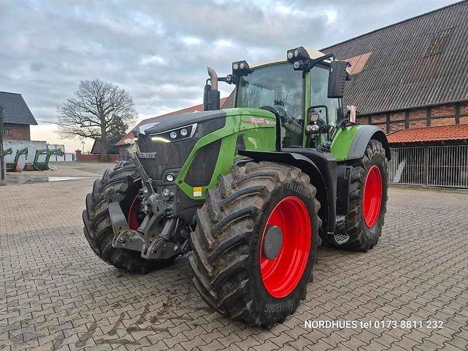
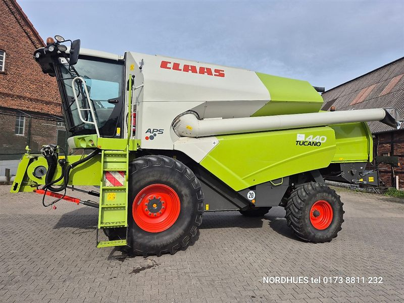
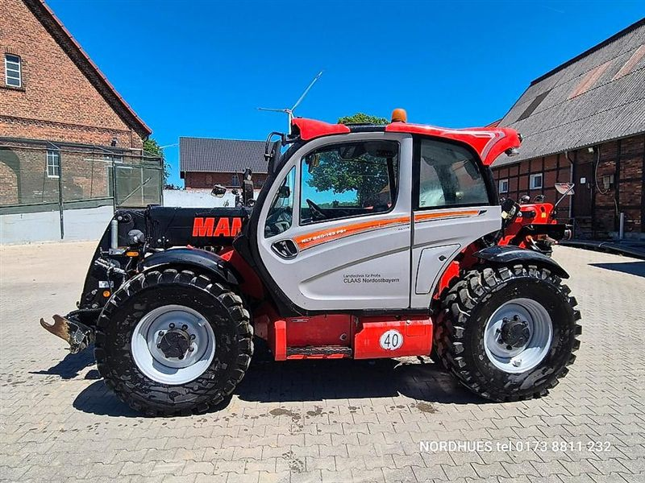
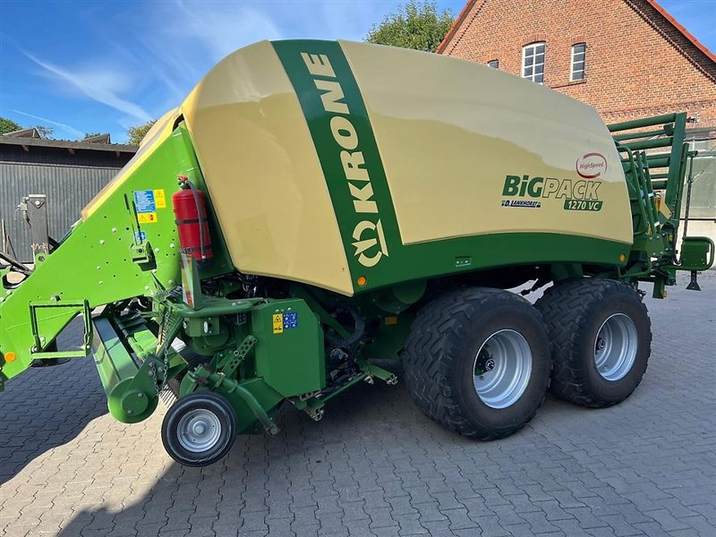

Traktoren
Schlepper namhafter Hersteller, vom Standardtraktor bis zur großen Maschine.
Traktoren ansehenDer Agrarservice Nordhues in Warendorf handelt seit rund 30 Jahren mit gebrauchten Landmaschinen. Ehrliche Bilder, klare Preise und ein direktes Gespräch am Telefon.
Das ist ein Überblick, was wir handeln. Was gerade auf dem Hof steht, sehen Sie in den aktuellen Angeboten bei Traktorpool.

Schlepper namhafter Hersteller, vom Standardtraktor bis zur großen Maschine.
Traktoren ansehen


Pressen, Pflüge, Mulcher, Zubehör, Ersatzteile und GPS-Systeme.
Alle Angebote ansehenDie Fotos sind Beispielbilder aus unseren Anzeigen. Maschinen, Preise und Verfügbarkeit entnehmen Sie bitte den aktuellen Angeboten.
Wir sind seit rund 30 Jahren im Gebrauchtmarkt tätig und handeln mit gebrauchter Landtechnik von A bis Z. Unser Ziel ist, Ihnen den besten Preis am Markt zu machen. So arbeiten wir:
Unsere Maschinen finden Sie mit Fotos, technischen Daten und Preisen bei Traktorpool und auf Kleinanzeigen. Bei Interesse rufen Sie uns bitte an.
Unser Händlerprofil mit den aktuellen Angeboten im Online-Marktplatz für Landmaschinen.
Zu TraktorpoolLeider gibt es im Netz gefälschte Anzeigen. Bitte zahlen Sie nie, bevor Sie die Maschine vor Ort gesehen haben. Achten Sie bei Rechnungen auf die richtigen Bankdaten und rufen Sie uns im Zweifel kurz an: 0173 8811232.
Am besten erreichen Sie uns telefonisch oder per WhatsApp. Bitte haben Sie Verständnis, dass wir nicht jede Anfrage schriftlich beantworten können.
Agrarservice Nordhues
Gregor Nordhues
An der Kreutzbreede 28
48231 Warendorf
Montag bis Freitag
9:00 bis 17:00 Uhr
Besichtigung bitte nur nach telefonischer Absprache.
E-Mail: 01738811232@web.de